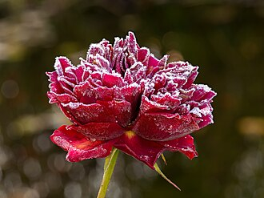

Rose

A rose is a type of flowering shrub. Its name comes from the Latin word Rosa. Roses can be seen in many gardens. In a big vineyard, a bush of roses are planted at the end of each row of vines. As long as the roses stay healthy, the vine growers assume their vines are healthy as well. Roses can bloom through summer, adding color to gardens.There are over three hundred species and tens of thousands of cultivars. The flowers of the rose grow in many different colors, from the well-known red rose or yellow rose and sometimes white or purple rose.Rose thorns are actually prickles – outgrowths of the epidermisRoses belong to the family of plants called Rosaceae. All roses were originally wild: they grew in North America, Europe, northwest Africa and many parts of Asia and Oceania. There are over 150 different species of roses. The wild rose species can be grown in gardens, but most garden roses are cultivars, which have been selected by people.[2]Over hundreds of years they have been specially bred to produce a wide variety of growing habits and a broad range of colours from dark red to white including as well yellow and a bluish/lilac colour. Many roses have a strong, pleasant scent.Most roses have spines (incorrectly called prickles) on their stems. This is a common defense system in plants.Rose bushes are able to live in a wide variety of conditions. The fruit of the rose is called a hip or a haw or a hep. Some roses have decorative hips.
Read more...
Types
Garden Roses
There are thousands of rose cultivars that people grow in gardens and on farms. The names used to describe the different types often refer to one species that is the main ancestor of that group, for example, Gallica roses are mostly descended from Rosa gallica. Other groups have several different species among their ancestors. Hybrid Tea roses, Floribunda roses, and English roses are the most common in gardens today. They are of so many colours like red, yellow, orange, pink, purple and so on:
- Alba roses
- Bourbon roses
- Centifolia roses
- China roses
- Climbing roses
- Damask roses
- English roses
- Floribunda roses
- Gallica roses
- Hybrid Bracteata roses
Read more...
The 3 Main Rose Categories
While there are many varieties of roses, most rose specialists would divide them into three categories: Old Garden Roses, Wild Roses and Modern Roses. Most of what you’ll find today in gardens are considered Modern Roses, which were bred to bloom large blooms continuously throughout the season, unlike an Old Garden Rose.
- Old Garden Roses
- Wild roses
- Modern Garden Roses
Read more...
Care
Knowing how to care for your roses will help them last much longer. Here’s how to look after yours:
Roses have a vase life of around 7-14 days. Prepare your roses by diagonally trimming the stems by a few centimeters.
Remove any leaves that will fall below the water line. This will reduce the build up of bacteria in the water and keep your roses fresher for longer.
Make sure your vase is clean and free of bacteria by washing it with soapy water before use.
Fill your vase â…” full with fresh water and add the flower food (follow the directions on the packet).
Keep the vase topped up with water daily and remove any foliage touching the water.
Change the water and re-trim the stems every few days to maximise vase life.
How to plant roses:
- Find a spot with plenty of sunlight
- Don’t plant too close to other flowers to reduce competition
- Avoid exposed, windy areas
- Put your shrub root into water for 30 mins prior to planting to hydrate
- Loosen the soil and dig a hole 40 cm wide and 60 cm deep
- Break up the soil at the bottom of the hole so the roots can burrow
- Add rotted manure
- Add your shrub root to the hole and spread the roots out
- Fill the hole around the roots with the soil you dug out earlier
- Pat the soil around the rose to keep it in place
- Water generously
Read more...
Meaning
It comes as no surprise that roses are the world’s favorite flower. Not only are they beautiful to look at, roses are full of meaning and have been used throughout history as a symbol of both love and war. As you may know the most common meaning for roses is that of love and romance, but there are a few lesser known meanings too:
Historically, roses meant secrecy and confidentiality. In ancient times, the Romans would hang roses from the ceiling as a sign that anything said (usually under the influence of wine) was to remain secret. This act lead to the latin term ‘sub rosa’ meaning ‘under the rose’.
Roses are used on four different tarot cards; on the fool card a white rose stands for purity and advises to cleanse the mind, the rose on the magician card signifies unfolding wisdom, the rose on the strength card shows balance, and on the death card is a symbol of clarity, purity and transparency of intent.
Mythological Meaning
In Ancient Greece, there was a deceptive union between King Theias and his daughter Myrrha which led to the birth of Adonis. When the King realised his daughter had deceived him, he chased her brandishing his sword. Seeing his rage, Aphrodite turned Myrrha into a tree to protect her.
The King shot the tree with an arrow causing it to split in half, and from this Adonis was born. Aphrodite loved Adonis like a son, and he grew to become a skilled hunter. One day, he came across a wild boar which was Ares - a past lover of Aphrodite in disguise - and was attacked. Aphrodite ran to his side after hearing his screams but it was too late, Adonis was dying. The blood that ran from his wounds turned to roses as it hit the ground.
Meaning by color
- Red Roses:
The classic red rose symbolises passionate love and romance and they make a great anniversary or Valentine’s Day gift
- Pink Roses:
Pretty pink roses symbolise gratitude, grace, admiration and joy - great for both family and friends.
- Yellow Roses:
These beauties represent friendship
- White Roses:
A great way to say ‘I’m thinking of you’
- Orange Roses:
Orange roses symbolise enthusiasm and passion - great for budding relationships
- Purple Roses:
Gorgeous purple roses symbolise enchantment and love at first sight - perfect for a first date.
Read more...